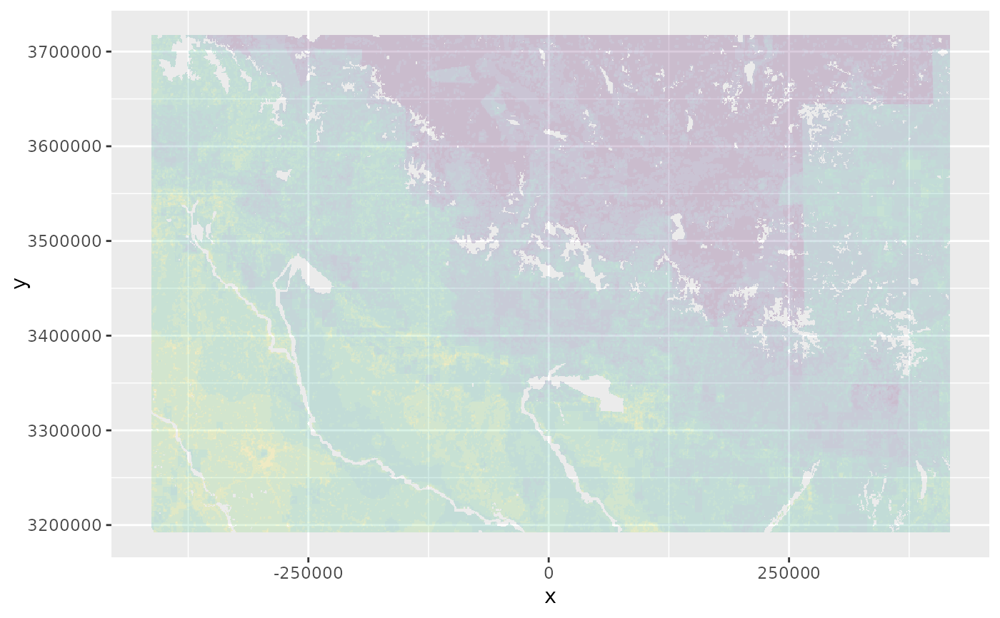

Function to create a plot with discrete background data for another plot
elsar_plot_background_d.RdFunction to create a plot with discrete background data for another plot
Usage
elsar_plot_background_d(
plot_type = "ggplot",
background_dat = NULL,
rescale_background = TRUE,
increase_extend = 0.05,
main_data = NULL,
background_alpha = 0.2,
color_map = "viridis",
custom_palette = NULL,
categorical = FALSE,
number_categories = 10,
data_layer = NULL
)Arguments
- plot_type
A character denoting whether "ggplot" or "tmap" is being used. Needs to match the main plot
- background_dat
A
SpatRasterfile that contains the data to be used as a background.- rescale_background
Logical. If TRUE, rescales the
SpatRasterto values between 0-1.- increase_extend
A numerical value that allows to extend the background beyond the extent of
raster_in. If extend_background <= 1, the lat and lon extend will be extended by the ratio provided (e.g. 0.05 will extend it by 5%). If extend_background > 1 all sides will be extended by the absolute value provided.- main_data
A
SpatRasterfile that contains the data that will be the main part of the main plot.- background_alpha
A value (0-1) for the opacity of the locked in areas when plotted on top of other plots.
- color_map
The name of the
viridispalette to be used. Default is "viridis".- custom_palette
An optional custom palette for plotting. Default uses the
viridispackage.- categorical
logical. if data is categorical (TRUE), convert to factor (if not yet) and use the number of categories given.
- number_categories
If data does not have pre-defined categories, how many categories to split the continuous data into
- data_layer
The data layer with continuous data to be converted into categories.
Examples
boundary_proj <- make_boundary(
boundary_in = boundary_dat,
iso3 = "NPL",
iso3_column = "iso3cd",
do_project = TRUE
)
pus <- make_planning_units(
boundary_proj = boundary_proj,
pu_size = NULL,
pu_threshold = 8.5e5,
limit_to_mainland = FALSE
)
#> [1] "The current number of planning units is: 3743382"
#> [1] "The current number of planning units is: 2396805"
#> [1] "The current number of planning units is: 1665187"
#> [1] "The current number of planning units is: 1223941"
#> [1] "The current number of planning units is: 741036"
wad_dat <- get_wad_data()
wadOut <- make_normalised_raster(
raster_in = wad_dat,
pus = pus,
iso3 = "NPL"
)
(background_plot <- elsar_plot_background_d(
background_dat = wad_dat,
main_data = wadOut,
increase_extend = 0.05,
number_categories = 10,
data_layer = "wad_final_cog",
))
#> Adding background layer.
#> Extend based on ratio.
#> [[1]]

#>
#> [[2]]
#> x y wad_final_cog category interval
#> 1 -412943.7 3716755 0.5359057655 7 0.53-0.61
#> 2 -412075.9 3716755 0.5584889387 7 0.53-0.61
#> 3 -411208.1 3716755 0.5587469203 7 0.53-0.61
#> 4 -410340.4 3716755 0.5422957014 7 0.53-0.61
#> 5 -409472.6 3716755 0.4876079380 6 0.44-0.53
#> 6 -408604.8 3716755 0.4866100005 6 0.44-0.53
#> 7 -407737.0 3716755 0.5282532498 7 0.53-0.61
#> 8 -406869.2 3716755 0.5582979455 7 0.53-0.61
#> 14 -401662.5 3716755 0.4822973152 6 0.44-0.53
#> 15 -400794.8 3716755 0.4789768201 6 0.44-0.53
#> 16 -399927.0 3716755 0.4789259317 6 0.44-0.53
#> 17 -399059.2 3716755 0.4842341185 6 0.44-0.53
#> 18 -398191.4 3716755 0.5572905308 7 0.53-0.61
#> 19 -397323.6 3716755 0.5344368537 7 0.53-0.61
#> 20 -396455.8 3716755 0.4832064549 6 0.44-0.53
#> 21 -395588.1 3716755 0.4865684753 6 0.44-0.53
#> 22 -394720.3 3716755 0.4815899402 6 0.44-0.53
#> 23 -393852.5 3716755 0.4789612148 6 0.44-0.53
#> 24 -392984.7 3716755 0.4789259317 6 0.44-0.53
#> 25 -392116.9 3716755 0.4789259317 6 0.44-0.53
#> 26 -391249.2 3716755 0.4789259317 6 0.44-0.53
#> 27 -390381.4 3716755 0.4820031370 6 0.44-0.53
#> 28 -389513.6 3716755 0.5277496947 7 0.53-0.61
#> 29 -388645.8 3716755 0.5657516655 7 0.53-0.61
#> 30 -387778.0 3716755 0.6204330346 8 0.61-0.7
#> 31 -386910.2 3716755 0.5689318275 7 0.53-0.61
#> 32 -386042.5 3716755 0.5576128746 7 0.53-0.61
#> 33 -385174.7 3716755 0.5511843442 7 0.53-0.61
#> 34 -384306.9 3716755 0.5236268226 6 0.44-0.53
#> 35 -383439.1 3716755 0.4796954995 6 0.44-0.53
#> 42 -377364.6 3716755 0.5188481871 6 0.44-0.53
#> 43 -376496.9 3716755 0.4322162250 5 0.35-0.44
#> 44 -375629.1 3716755 0.3995825783 5 0.35-0.44
#> 45 -374761.3 3716755 0.3991049431 5 0.35-0.44
#> 46 -373893.5 3716755 0.3991049431 5 0.35-0.44
#> 47 -373025.7 3716755 0.3991049431 5 0.35-0.44
#> 48 -372158.0 3716755 0.4262505238 5 0.35-0.44
#> 49 -371290.2 3716755 0.4779968097 6 0.44-0.53
#> 50 -370422.4 3716755 0.4788849774 6 0.44-0.53
#> 51 -369554.6 3716755 0.4238968698 5 0.35-0.44
#> 52 -368686.8 3716755 0.3994125571 5 0.35-0.44
#> 53 -367819.0 3716755 0.3991049431 5 0.35-0.44
#> 54 -366951.3 3716755 0.3991049431 5 0.35-0.44
#> 55 -366083.5 3716755 0.3966463532 5 0.35-0.44
#> 56 -365215.7 3716755 0.4296616817 5 0.35-0.44
#> 57 -364347.9 3716755 0.4780607532 6 0.44-0.53
#> 58 -363480.1 3716755 0.4789254369 6 0.44-0.53
#> 59 -362612.4 3716755 0.4729475941 6 0.44-0.53
#> 60 -361744.6 3716755 0.4667918894 6 0.44-0.53
#> 61 -360876.8 3716755 0.3872256852 5 0.35-0.44
#> 62 -360009.0 3716755 0.3497678432 4 0.26-0.35
#> 63 -359141.2 3716755 0.3982360345 5 0.35-0.44
#> 64 -358273.4 3716755 0.3991056663 5 0.35-0.44
#> 65 -357405.7 3716755 0.3054942129 4 0.26-0.35
#> 66 -356537.9 3716755 0.1839960621 3 0.18-0.26
#> 68 -354802.3 3716755 0.1478549997 2 0.09-0.18
#> 69 -353934.5 3716755 0.0886402451 2 0.09-0.18
#> 70 -353066.7 3716755 0.1160750750 2 0.09-0.18
#> 71 -352199.0 3716755 0.1588844084 2 0.09-0.18
#> 72 -351331.2 3716755 0.1596419772 2 0.09-0.18
#> 73 -350463.4 3716755 0.1596419772 2 0.09-0.18
#> 74 -349595.6 3716755 0.1012279152 2 0.09-0.18
#> 75 -348727.8 3716755 0.2365595118 3 0.18-0.26
#> 76 -347860.1 3716755 0.2394444108 3 0.18-0.26
#> 77 -346992.3 3716755 0.2393924567 3 0.18-0.26
#> 78 -346124.5 3716755 0.2001350045 3 0.18-0.26
#> 79 -345256.7 3716755 0.1603089309 2 0.09-0.18
#> 80 -344388.9 3716755 0.1074037926 2 0.09-0.18
#> 81 -343521.1 3716755 0.1484981839 2 0.09-0.18
#> 82 -342653.4 3716755 0.1596180555 2 0.09-0.18
#> 83 -341785.6 3716755 0.1597122580 2 0.09-0.18
#> 84 -340917.8 3716755 0.1340206880 2 0.09-0.18
#> 85 -340050.0 3716755 0.1260196516 2 0.09-0.18
#> 86 -339182.2 3716755 0.1666197557 2 0.09-0.18
#> 87 -338314.5 3716755 0.2181628877 3 0.18-0.26
#> 88 -337446.7 3716755 0.1736706125 2 0.09-0.18
#> 89 -336578.9 3716755 0.1597124673 2 0.09-0.18
#> 90 -335711.1 3716755 0.1596419772 2 0.09-0.18
#> 91 -334843.3 3716755 0.1328461161 2 0.09-0.18
#> 92 -333975.5 3716755 0.0807775531 1 0-0.09
#> 93 -333107.8 3716755 0.0841877975 1 0-0.09
#> 94 -332240.0 3716755 0.0874536838 1 0-0.09
#> 95 -331372.2 3716755 0.0814083101 1 0-0.09
#> 96 -330504.4 3716755 0.0133577006 1 0-0.09
#> 97 -329636.6 3716755 0.0236493694 1 0-0.09
#> 98 -328768.9 3716755 0.0838728186 1 0-0.09
#> 99 -327901.1 3716755 0.0799169134 1 0-0.09
#> 100 -327033.3 3716755 0.0360660192 1 0-0.09
#> 101 -326165.5 3716755 0.0536092115 1 0-0.09
#> 102 -325297.7 3716755 0.0794610542 1 0-0.09
#> 103 -324429.9 3716755 0.0866969713 1 0-0.09
#> 104 -323562.2 3716755 0.0860822382 1 0-0.09
#> 105 -322694.4 3716755 0.0609448643 1 0-0.09
#> 106 -321826.6 3716755 0.0459092377 1 0-0.09
#> 107 -320958.8 3716755 0.1288711611 2 0.09-0.18
#> 108 -320091.0 3716755 0.1666901126 2 0.09-0.18
#> 109 -319223.3 3716755 0.1673257035 2 0.09-0.18
#> 110 -318355.5 3716755 0.0934162163 2 0.09-0.18
#> 111 -317487.7 3716755 0.1580798240 2 0.09-0.18
#> 112 -316619.9 3716755 0.1596408259 2 0.09-0.18
#> 113 -315752.1 3716755 0.1908475332 3 0.18-0.26
#> 114 -314884.3 3716755 0.2346276185 3 0.18-0.26
#> 115 -314016.6 3716755 0.1370356055 2 0.09-0.18
#> 116 -313148.8 3716755 0.0807226968 1 0-0.09
#> 117 -312281.0 3716755 0.0864406264 1 0-0.09
#> 118 -311413.2 3716755 0.0975461963 2 0.09-0.18
#> 119 -310545.4 3716755 0.1584213984 2 0.09-0.18
#> 120 -309677.7 3716755 0.1299417867 2 0.09-0.18
#> 121 -308809.9 3716755 0.0807238482 1 0-0.09
#> 122 -307942.1 3716755 0.0798209886 1 0-0.09
#> 123 -307074.3 3716755 0.1947610092 3 0.18-0.26
#> 124 -306206.5 3716755 0.2388727064 3 0.18-0.26
#> 125 -305338.7 3716755 0.2393997836 3 0.18-0.26
#> 126 -304471.0 3716755 0.2394617289 3 0.18-0.26
#> 127 -303603.2 3716755 0.2394629659 3 0.18-0.26
#> 128 -302735.4 3716755 0.2394629659 3 0.18-0.26
#> 129 -301867.6 3716755 0.2394629659 3 0.18-0.26
#> 130 -300999.8 3716755 0.2394629659 3 0.18-0.26
#> 131 -300132.0 3716755 0.2394629659 3 0.18-0.26
#> 132 -299264.3 3716755 0.2394629659 3 0.18-0.26
#> 133 -298396.5 3716755 0.2394629659 3 0.18-0.26
#> 134 -297528.7 3716755 0.2394629659 3 0.18-0.26
#> 135 -296660.9 3716755 0.2394629659 3 0.18-0.26
#> 136 -295793.1 3716755 0.2394629659 3 0.18-0.26
#> 137 -294925.4 3716755 0.2394629659 3 0.18-0.26
#> 138 -294057.6 3716755 0.1820218634 3 0.18-0.26
#> 139 -293189.8 3716755 0.1603722083 2 0.09-0.18
#> 140 -292322.0 3716755 0.1596419772 2 0.09-0.18
#> 141 -291454.2 3716755 0.1596419772 2 0.09-0.18
#> 142 -290586.4 3716755 0.1596419772 2 0.09-0.18
#> 143 -289718.7 3716755 0.1596419772 2 0.09-0.18
#> 144 -288850.9 3716755 0.1596419772 2 0.09-0.18
#> 145 -287983.1 3716755 0.1596419772 2 0.09-0.18
#> 146 -287115.3 3716755 0.1596419772 2 0.09-0.18
#> 147 -286247.5 3716755 0.1596419772 2 0.09-0.18
#> 148 -285379.8 3716755 0.1596419772 2 0.09-0.18
#> 149 -284512.0 3716755 0.1596419772 2 0.09-0.18
#> 150 -283644.2 3716755 0.1596045532 2 0.09-0.18
#> 151 -282776.4 3716755 0.1547006093 2 0.09-0.18
#> 152 -281908.6 3716755 0.1519973973 2 0.09-0.18
#> 153 -281040.8 3716755 0.1586974402 2 0.09-0.18
#> 154 -280173.1 3716755 0.1596419772 2 0.09-0.18
#> 155 -279305.3 3716755 0.1596419772 2 0.09-0.18
#> 156 -278437.5 3716755 0.1596419772 2 0.09-0.18
#> 157 -277569.7 3716755 0.1596419772 2 0.09-0.18
#> 158 -276701.9 3716755 0.1596419772 2 0.09-0.18
#> 159 -275834.2 3716755 0.1596419772 2 0.09-0.18
#> 160 -274966.4 3716755 0.1596419772 2 0.09-0.18
#> 161 -274098.6 3716755 0.1489827368 2 0.09-0.18
#> 162 -273230.8 3716755 0.0811701396 1 0-0.09
#> 163 -272363.0 3716755 0.1090561519 2 0.09-0.18
#> 164 -271495.2 3716755 0.1200936487 2 0.09-0.18
#> 182 -255875.2 3716755 0.1530882527 2 0.09-0.18
#> 183 -255007.4 3716755 0.0813024418 1 0-0.09
#> 184 -254139.6 3716755 0.0552789507 1 0-0.09
#> 185 -253271.8 3716755 0.0315695106 1 0-0.09
#> 186 -252404.0 3716755 0.0755273199 1 0-0.09
#> 187 -251536.3 3716755 0.0290446102 1 0-0.09
#> 203 -237651.7 3716755 0.0786328288 1 0-0.09
#> 204 -236784.0 3716755 0.0798186526 1 0-0.09
#> 205 -235916.2 3716755 0.0798209886 1 0-0.09
#> 206 -235048.4 3716755 0.0798209886 1 0-0.09
#> 207 -234180.6 3716755 0.0798209886 1 0-0.09
#> 208 -233312.8 3716755 0.0798209886 1 0-0.09
#> 209 -232445.1 3716755 0.1365892760 2 0.09-0.18
#> 210 -231577.3 3716755 0.1593548404 2 0.09-0.18
#> 211 -230709.5 3716755 0.1596419772 2 0.09-0.18
#> 212 -229841.7 3716755 0.1596257820 2 0.09-0.18
#> 213 -228973.9 3716755 0.1322442669 2 0.09-0.18
#> 214 -228106.1 3716755 0.0808189356 1 0-0.09
#> 215 -227238.4 3716755 0.0798209886 1 0-0.09
#> 216 -226370.6 3716755 0.0798209886 1 0-0.09
#> 217 -225502.8 3716755 0.0798209886 1 0-0.09
#> 218 -224635.0 3716755 0.0798209886 1 0-0.09
#> 219 -223767.2 3716755 0.0798209886 1 0-0.09
#> 220 -222899.5 3716755 0.0798209886 1 0-0.09
#> 221 -222031.7 3716755 0.0798209886 1 0-0.09
#> 222 -221163.9 3716755 0.0798209886 1 0-0.09
#> 223 -220296.1 3716755 0.0798209886 1 0-0.09
#> 224 -219428.3 3716755 0.0797647288 1 0-0.09
#> 225 -218560.5 3716755 0.0733231956 1 0-0.09
#> 226 -217692.8 3716755 0.0796033000 1 0-0.09
#> 227 -216825.0 3716755 0.0579498864 1 0-0.09
#> 228 -215957.2 3716755 0.0086620174 1 0-0.09
#> 229 -215089.4 3716755 0.0035750777 1 0-0.09
#> 230 -214221.6 3716755 0.0001074118 1 0-0.09
#> 231 -213353.9 3716755 0.0553984689 1 0-0.09
#> 232 -212486.1 3716755 0.0724160256 1 0-0.09
#> 233 -211618.3 3716755 0.0796824681 1 0-0.09
#> 234 -210750.5 3716755 0.0798912504 1 0-0.09
#> 235 -209882.7 3716755 0.0798924683 1 0-0.09
#> 236 -209014.9 3716755 0.0798924683 1 0-0.09
#> 237 -208147.2 3716755 0.0750006090 1 0-0.09
#> 238 -207279.4 3716755 0.0240963221 1 0-0.09
#> 239 -206411.6 3716755 0.0770768510 1 0-0.09
#> 240 -205543.8 3716755 0.0863918314 1 0-0.09
#> 241 -204676.0 3716755 0.0800255032 1 0-0.09
#> 242 -203808.3 3716755 0.0798924683 1 0-0.09
#> 243 -202940.5 3716755 0.0798571186 1 0-0.09
#> 244 -202072.7 3716755 0.0798216262 1 0-0.09
#> [ reached 'max' / getOption("max.print") -- omitted 551022 rows ]
#>